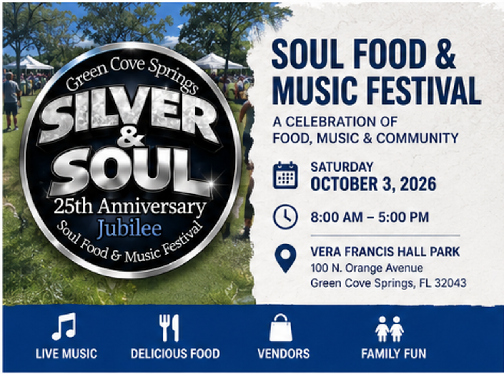
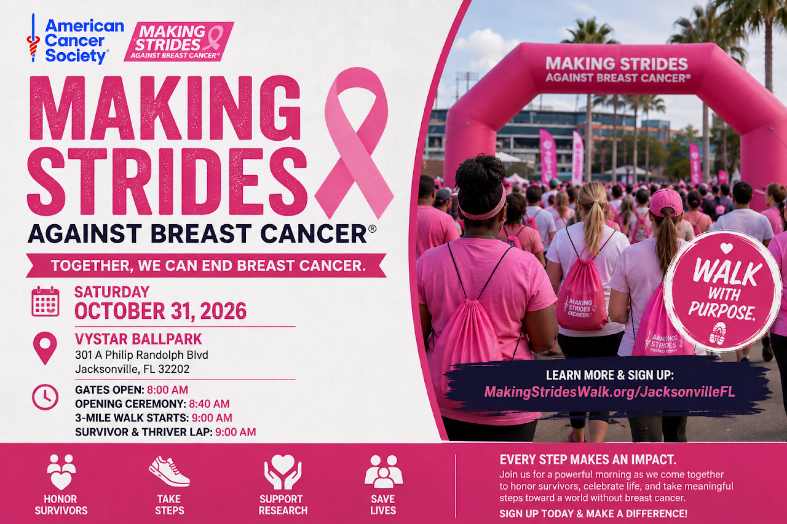
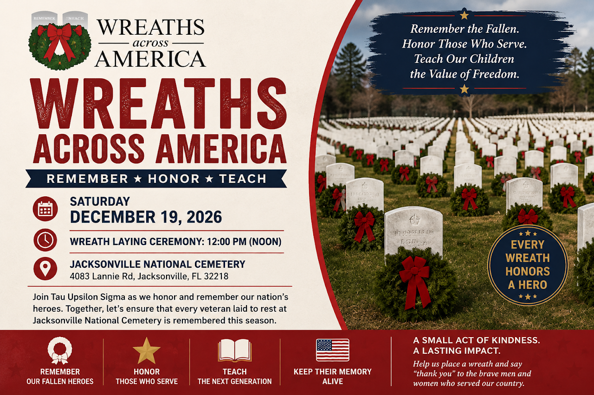

Upcoming Events
Join the Tau Upsilon Sigma Chapter of Phi Beta Sigma Fraternity, Inc. at upcoming programs, service initiatives, and community events throughout the geographical area of Clay County, Florida and surrounding areas.

Green Cove Springs
Soul Food Festival
October 3, 2026 | 8:00 AM – 5:00 PM
The Tau Upsilon Sigma Chapter will have a non-food vendor booth at the Green Cove Springs Soul Food & Music Festival. Stop by to meet the brothers, learn more about Phi Beta Sigma Fraternity, Inc. and our chapter, and discover how we serve the geographical area of Clay County, Florida and surrounding areas. We look forward to connecting with you!
Location: Vera Francis Hall Park • 100 N. Orange Ave • Green Cove Springs, FL 32043
VISIT OFFICIAL EVENT PAGE
Making Strides Against
Breast Cancer Walk
October 31, 2026 | Gates Open 8:00 AM | Walk 9:00 AM
The Tau Upsilon Sigma Chapter of Phi Beta Sigma Fraternity, Inc. will join the American Cancer Society and the First Coast community for the Making Strides Against Breast Cancer Walk at VyStar Ballpark. Join the brothers as we walk to honor survivors, support those impacted by breast cancer, and help raise awareness in the fight against the disease.
Location: VyStar Ballpark • 301 A Philip Randolph Blvd • Jacksonville, FL 32202
VISIT OFFICIAL EVENT PAGE
Wreaths Across America
December 19, 2026 | Wreath Laying Ceremony: 12:00 PM
The Tau Upsilon Sigma Chapter of Phi Beta Sigma Fraternity, Inc. will join volunteers at Jacksonville National Cemetery for Wreaths Across America, honoring the service and sacrifice of our nation's veterans. The brothers will help place remembrance wreaths on veterans' graves as part of the national mission to Remember the fallen, Honor those who serve, and Teach the next generation the value of freedom.
Location: Jacksonville National Cemetery • 4083 Lannie Rd Jacksonville, FL 32218
VISIT OFFICIAL EVENT PAGE